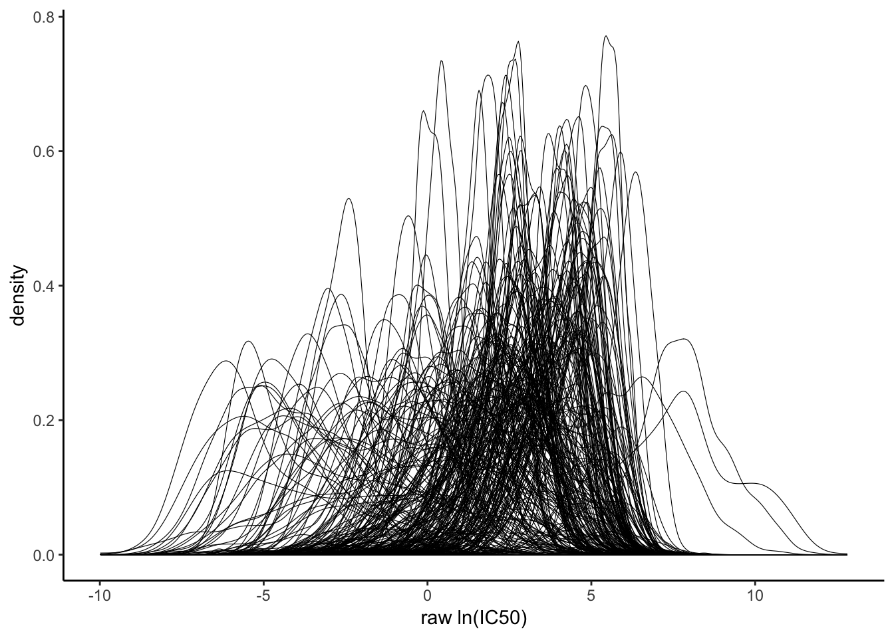

2 Preprocess pharmacogenomic data
I download the openly available dataset generated by Iorio et al.
The data is stored in separate excel files containing fitted dose response data as well as details about the profiled cell lines.
crxg <- read_excel("~/combis/local_data/v17_fitted_dose_response.xlsx") %>%
dplyr::select(-c(1,2)) %>% `colnames<-`(colnames(.) %>% tolower()) %>%
full_join(., read_excel("~/combis/local_data/Screened_Compounds.xlsx") %>%
`colnames<-`(colnames(.) %>% tolower()) %>%
rename(drug_id = `drug id`, drug_name = `drug name`, target_pathway = `target pathway`)) %>%
full_join(., read_excel("~/combis/local_data/Cell_Lines_Details.xlsx", sheet = "Cell line details") %>% `colnames<-`(colnames(.) %>% tolower() %>% str_replace_all(., " ", "_")) %>%
#I manually select relevant columns
dplyr::select(c(1,2,8,9,10,11,12,13)) %>%
`colnames<-`(c("sample_name", "cosmic_id", "gdsc_tissue_1",
"gdsc_tissue_2", "cancer_type", "msi", "medium", "growth_properties")))Now I plot the distribution of ln_ic50s for all drugs. As expected, distributions of transformed ic50 values are very heterogenous.
crxg %>%
ggplot(aes(ln_ic50, group = drug_id)) +
geom_density(alpha = 1, size = 0.2) +
theme_classic() +
labs(x = "raw ln(IC50)") +
ggsave("raw_ic50.pdf", width = 3, height = 2)